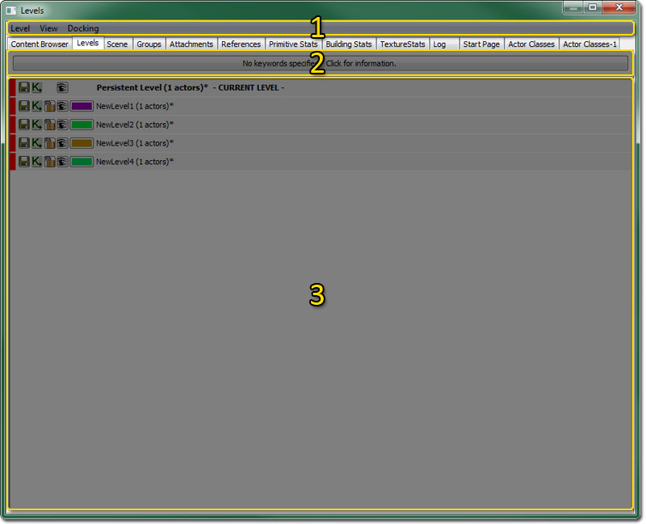
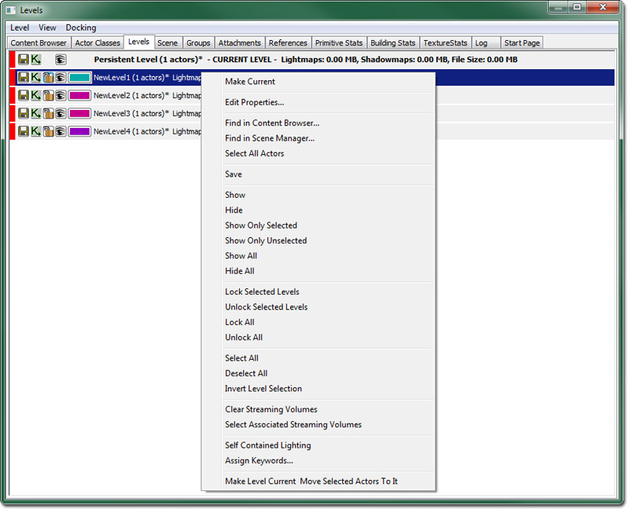

UDN
Search public documentation:
LevelBrowserReferenceKR
English Translation
日本語訳
中国翻译
Interested in the Unreal Engine?
Visit the Unreal Technology site.
Looking for jobs and company info?
Check out the Epic games site.
Questions about support via UDN?
Contact the UDN Staff
日本語訳
中国翻译
Interested in the Unreal Engine?
Visit the Unreal Technology site.
Looking for jobs and company info?
Check out the Epic games site.
Questions about support via UDN?
Contact the UDN Staff
레벨 브라우저 참고서
문서 변경내역: Richard Nalezynski 작성. Jeff Wilson 업데이트. 홍성진 번역.
개요
레벨 브라우저 열기
레벨 브라우저 인터페이스

메뉴바
레벨
- 새 레벨... - 새 레벨을 만들어 퍼시스턴트(지속) 레벨에 추가시킵니다.
- 선택 액터로부터 새 레벨 - 새 레벨을 만들어 퍼시스턴트 레벨에 추가시킵니다.
- 기존 레벨 추가... - 파일 브라우저를 열어 기존 레벨을 퍼시스턴트 레벨에 추가시킵니다.
- 현재로 만들기 - 선택된 레벨을 현재 레벨로 설정합니다.
- 레벨 그리드의 모든 액터 업데이트 - 설명 필요.
- 레벨 그리드의 액터 자동-업데이트 - 설명 필요.
- 레벨을 새 레벨로 병합 - 레벨 브라우저에 현재 선택되어 있는 레벨 전부를 하나의 새 레 벨로 통합시킵니다.
- 월드에서 레벨 제거 - 퍼시스턴트 레벨에서 레벨을 제거합니다.
보기
- 새로고침 - 레벨 목록을 새로고칩니다.
- 콘텐츠 브라우저에서 찾기... - 콘텐츠 브라우저를 열고 레벨 목록에 현재 선택되어 있는 레벨에 대한 패키지를 선택합니다.
- 필터 창 토글 - 필터 창을 보이거나 숨깁니다.
- 레벨 메모리/크기 데이터 - 레벨 목록의 메모리, 라이트맵과 섀도우맵, 파일 크기 정보 등을 토글합니다.
도킹
- 붙이기 - 현재 떠다니는 브라우저를 메인 브라우저 창에 붙입니다. 현재 브라우저가 붙어있으면 이 옵션은 체크되어 표시됩니다.
- 떼기 - 메인 브라우저 창에 도킹된 브라우저를 떼어내어 자체적으로 떠다디는 창이 되도록 합니다. 현재 브라우저가 떠다니는 상태이면 이 옵션은 체크되어 표시됩니다.
- 브라우저 복제 - 현재 브라우저의 사본을 생성하는 옵션입니다.
- 브라우저 삭제 - 현재 브라우저를 제거하는 옵션입니다. 복제된 브라우저 창에서만 사용 가능합니다.
레벨 목록
레벨 목록은 퍼시스턴트 레벨을 포함해서 스트림 레벨, 월드에 존재하는 LevelGridVolumes 를 나타냅니다. 현재 레벨로 표시된 레벨은, 에디터 창이나 키즈멧의 변경사항이 적용되는 레벨을 말합니다. 레벨은 추가되는 순서대로 표시되나, 스트리밍 레벨은 선택 후 위아래 화살표로 목록내 위치를 옮길 수 있습니다.
레벨 목록 버튼
| 레벨을 저장합니다. 레벨을 dirty 로 마킹하는 변경사항이 생겨야 활성화되지만, 그냥 아무때나 눌러도 저장되기는 합니다. | |
| 레벨에 대한 메인 키즈멧 시퀸스를 엽니다. | |
| 스트리밍 레벨을 잠그거나 풀어 변경되지 못하도록 합니다. 한 레벨이 현재 레벨이 될 수 없게 만드는 것입니다. 스트리밍 레벨에만 사용가능한 옵션입니다. | |
| 에디터에서 레벨을 숨기거나 해제할 수 있습니다. 이는 순전히 시각적인 목적으로, 게임이 실행될 때 레벨이 스트리밍될 지를 결정하는 것은 아닙니다. 그러나 여기에 보이지 않는 레벨은, 레벨 리빌드를 해도 영향을 받지 않을 것이기에, 복잡한 레벨이 있을 경우 시간을 크게 절약할 수 있습니다. | |
 | 레벨 색을 선택할 수 있습니다. 레벨의 여러 유형을 색으로 조직화시키는 데 좋습니다. 스트리밍 레벨에만 사용가능합니다. |
맥락 메뉴

- 현재로 만들기 - 선택된 레벨을 현재 레벨로 만듭니다.
- 속성 편집... - 선택된 레벨 전부에 대해 레벨 속성 창을 엽니다.
- 콘텐츠 브라우저에서 찾기... - 선택된 레벨에 속하는 모든 패키지를 (콘텐츠 브라우저에서) 선택합니다.
- 씬 매니저에서 찾기... - 씬 매니저에 선택된 레벨을 표시합니다.
- 모든 액터 선택 - 현재 레벨 선택 세트의 아무 레벨에 속하는 액터를 전부 선택합니다.
- 저장 - 선택된 레벨 전부를 저장합니다. (주: 잠기지 않고 보이는 레벨만 저장 가능합니다.)
- 표시 및 숨김 - 선택된 레벨 전부를 보이거나 안보이게 만듭니다.
- 선택된 것만 표시 - 선택된 레벨 전부는 보이게 하고, 나머지는 안보이게 만듭니다.
- 선택되지 않은 것만 표시 - 선택된 레벨을 전부 안보이게 하고, 나머지는 보이게 만듭니다.
- 모두 표시 - 모든 레벨을 보이게 만듭니다.
- 모두 숨김 - 모든 레벨을 안보이게 만듭니다.
- 선택된 레벨 잠금 - 선택된 레벨을 전부 잠급니다.
- 선택된 레벨 잠금해제 - 선택된 레벨을 전부 잠금해제합니다.
- 모두 잠금 - 모든 레벨을 잠급니다.
- 모두 잠금해제 - 모든 레벨을 잠금해제합니다.
- 모두 선택 - 모든 레벨을 선택합니다.
- 모두 선택해제 - 레벨 선택 목록을 비웁니다.
- 레벨 선택 반전 - 레벨 선택 세트를 반전시킵니다.
- 스트리밍 볼륨 비우기 - 현재 선택된 레벨에 대한 스트리밍 볼륨 연관성을 해제합니다.
- 연관된 스트리밍 볼륨 선택 - 선택된 레벨에 대해 연관된 스트리밍 볼륨 전부를 (에디터에서) 선택합니다.
- 자체 포함된 라이팅 - 선택된 각 레벨에 대한 'Self Contained Lighting' 속성을 토글시킵니다.
- 키워드 할당... - 현재 선택된 레벨에 키워드가 관련되도록 허용합니다.
- 현재 레벨로 만들고 선택된 액터를 여기에 이동 - 선택된 레벨을 현재 레벨로 만들고, 뷰포트에 선택된 액터 전부를 그 레벨로 옮깁니다.
필터링
[LevelBrowser.Keywords] +Keywords=Mission +Keywords=Script +Keywords=Cinematic +Keywords=Audio +Keywords=World +Keywords=Background +Keywords=LOD
 그 후 키워드를 아무 스트리밍 레벨에 할당시킬 수 있습니다. 키워드를 할당하려면 맥락 메뉴에서 "키워드 할당"을 선택, 체크박스 목록 대화창이 열립니다. 레벨 세트 범위를 줄이려면, 레벨 브라우저 상단의 "키워드로 걸러내기" 메뉴를 사용하십시오.
그 후 키워드를 아무 스트리밍 레벨에 할당시킬 수 있습니다. 키워드를 할당하려면 맥락 메뉴에서 "키워드 할당"을 선택, 체크박스 목록 대화창이 열립니다. 레벨 세트 범위를 줄이려면, 레벨 브라우저 상단의 "키워드로 걸러내기" 메뉴를 사용하십시오.